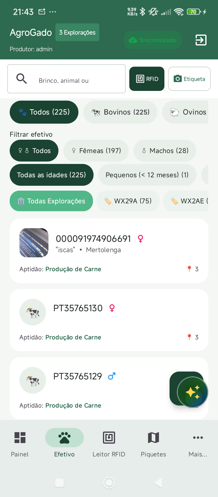
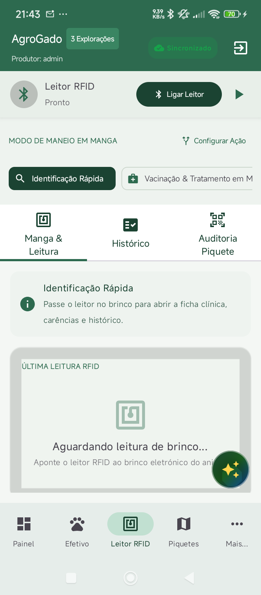

Controle o efetivo, regenere o solo e decida com ciência no campo.
A AgroGado une rastreabilidade legal DGAV, leitura RFID em manga, mapas de satélite HD e um motor agronómico baseado nas Leis de André Voisin — funcionando 100% offline no telemóvel.
Ponto Ótimo de Voisin
62.2 mm chuva 30d • Sinergia Bovinos + Ovinos
Concebida no Terreno
Da manga ao piquete, cada decisão num único fluxo.
Substitua cadernos de campo dispersos e folhas de cálculo desatualizadas por engenharia móvel adaptada à realidade das explorações ibéricas e mediterrânicas.
ISO 11784/85
Velocidade na Manga RFID
Ligue o leitor Bluetooth FDX-B/HDX, pese o lote e obtenha o Ganho Médio Diário (GMD) calculado automaticamente face à pesagem anterior — com alerta imediato em caso de perda de peso.
DGAV / SNIRA
Zero Risco Sanitário na Venda
Antes de confirmar qualquer venda ou envio para abate, a app audita todos os registos veterinários e bloqueia a saída se existir algum intervalo de segurança (carência) ainda ativo.
UG / ha
Solo Fértil & Menor Custo
Controle a carga instantânea por hectare, evite o segundo corte do rebento novo ao 4.º dia e utilize o gado como agente biológico de adubação natural e controlo de mato.
Produto Real em Produção
Interface Validada em Exploração Real
Capturas reais em operação multi-espécie (+220 cabeças). Clique ou toque em qualquer ecrã para inspecionar em detalhe.
01 / PAINEL
Comando & Clima 30d
Ações prioritárias + pluviosidade

02 / EFETIVO
Fichas & Nascimentos
PDF SNIRA + bloqueio de carência

03 / MANGA RFID
Leitura ISO 11784/85
Pesagem rápida & GMD automático
04 / SIG SATÉLITE
Piquetes & Carga
Perímetros GPS + efetivo por parque
05 / AGRONOMIA
Motor Voisin & Chuva
Repouso ajustado a 30d + prev. 5d
Agronomia Aplicada
Motor Científico de Pastoreio Racional Voisin
Cada recomendação de entrada e saída cruza a fenologia vegetal mediterrânica, a densidade instantânea do lote e a precipitação acumulada real nos últimos 30 dias.
Ajuste Pluviométrico Dinâmico do Repouso
A aplicação consulta automaticamente a precipitação real dos últimos 30 dias para as coordenadas da herdade (com deduplicação atómica e registo manual complementar) e recalibra os dias ideais de descanso.
Assegura que a planta acumula reservas suficientes nas raízes antes do corte seguinte, aumentando a profundidade radicular, a matéria orgânica e a infiltração de água no solo.
2.ª Lei de Voisin1 – 6 dias máx.
Lei da Ocupação Curta
O tempo máximo de permanência é calculado pela densidade instantânea (UG/ha). Ultrapassar o limite dispara alerta imediato para impedir o 2.º corte do rebento novo.
3.ª Lei de Voisin1.0 / 0.15 UG
Sinergia Tripla Multi-Espécie
Bovinos (1.0 UG) despontam o estrato alto e pisoteiam sementes; ovinos (0.15 UG) mineralizam e equilibram leguminosas; caprinos (0.15 UG) controlam arbustivas e quebram ciclos parasitários.
4.ª Lei de Voisin~180 g N / UG / dia
Fertilização Biológica & Resíduo
Estima ~28 kg de estrume+urina/UG/dia (~180 g de Azoto puro) depositados no piquete, recomendando a saída com ≥ 7 cm de resíduo vegetal para proteger o microclima do solo.
Curva Sigmoide de Crescimento & Classificação Fisiológica
Cada piquete é classificado automaticamente em tempo real consoante a sua percentagem de recuperação:
Fase 1: Reserva Radicular
Proibido pastorear. Raízes em reconstrução de reservas.
Fase 2: Chama de Crescimento
Expansão foliar acelerada e acumulação de biomassa.
Fase 3: Ponto Ótimo (85–114%)
Equilíbrio máximo entre energia digestível e vigor radicular.
Fase 4: Pasto Maduro (≥115%)
Ideal para sementeira natural e cobertura morta (mulching).
Engenharia & Módulos
Capacidades Completas da Plataforma
Desenvolvida nativamente em Kotlin e Jetpack Compose para garantir fluidez máxima e autonomia total sem ligação à internet.
Rastreabilidade & PDFs DGAV
Importação automática de listagens e guias PDF SNIRA/DGAV.
Filtro de Gestantes com transferência direta para Piquete de Maternidade.
Árvore Genealógica visual interativa (avós, progenitores, crias e alerta de consanguinidade).
Bloqueio automático de venda com carência sanitária ativa.
Manga Eletrónica RFID
Ligação Bluetooth direta a bastões ISO 11784/85 (FDX-B / HDX).
4 modos: Consulta, Lote Sanitário, Auditoria e Pesagem.
Cálculo imediato de GMD (kg/dia) na manga.
SIG, Piquetes & Cobrição
Desenho de polígonos sobre satélite HD com área em hectares.
Gestão de bebedouros, comedouros e estado das cercas.
Controlo de Touros / Cobrição com janela de partos (+283d).
Pluviometria Automática 30d
Acumulado real dos últimos 30 dias pelas coordenadas da herdade.
Previsão de precipitação a 5 dias integrada no Painel e Rotações.
Registo manual complementar de pluviómetro físico.
Simulador (0–500 ha) & Custos
Simulador forrageiro ajustável de 0 a 500 hectares.
Registo de custos de feno, ração e tratamentos veterinários.
Indicadores de Custos Totais (€) e Custo / Cabeça.
Descarregue o instalador APKToque no botão de download para guardar AgroGado-v1.0-trial.apk no telemóvel.
02
Autorize a instalaçãoAo abrir o ficheiro, permita "Instalar aplicações de fontes desconhecidas" para o seu navegador ou gestor de ficheiros.
03
Crie conta em 10 segundosSó necessita de Nome, Utilizador e Palavra-passe — a Marca de Exploração DGAV é opcional no registo.
04
Recomendação Xiaomi (MIUI / HyperOS)Para o alerta diário das 08:00 disparar pontualmente, defina Poupança de bateria → Sem restrições nas definições da app.
Licenciamento Transparente
15 Dias Grátis • Até 15 Cabeças
Avalie todos os módulos no terreno sem compromisso. Ao atingir o limite, os seus dados nunca ficam bloqueados: pode exportar o backup completo a qualquer momento ou ativar a licença (Mensal, Anual ou Vitalícia) através do seu ID do Dispositivo (AGRO-XXXX-YYYY).
Sim. Toda a base de dados (animais, saúde, RFID, mapas gravados e rotações) corre localmente no telemóvel. A internet só é usada quando quiser sincronizar meteorologia ou carregar novos mosaicos de satélite.
Posso importar os meus animais atuais de um PDF?
Sim. Pode importar inventários oficiais SNIRA/DGAV em PDF diretamente na app, evitando registar centenas de animais manualmente.
Como transfiro os dados se mudar de telemóvel?
Em Mais → Produtor pode exportar um ficheiro JSON completo (ou usar o backup semanal automático em Documents/Agrogado_Backups/) e importá-lo no novo equipamento.